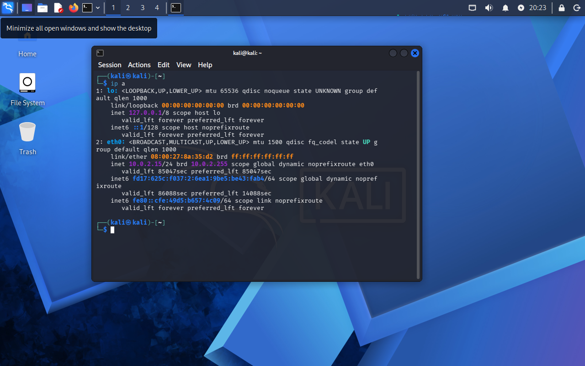
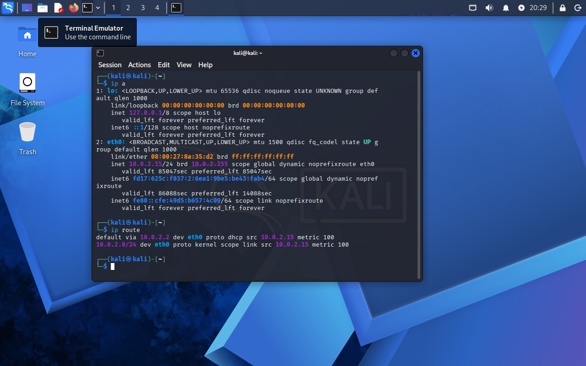
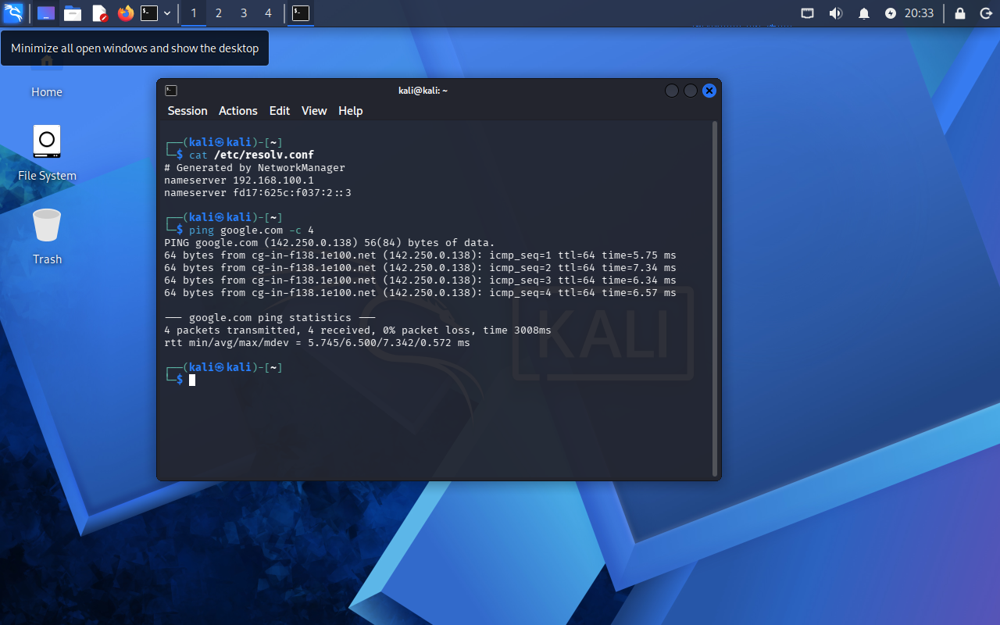
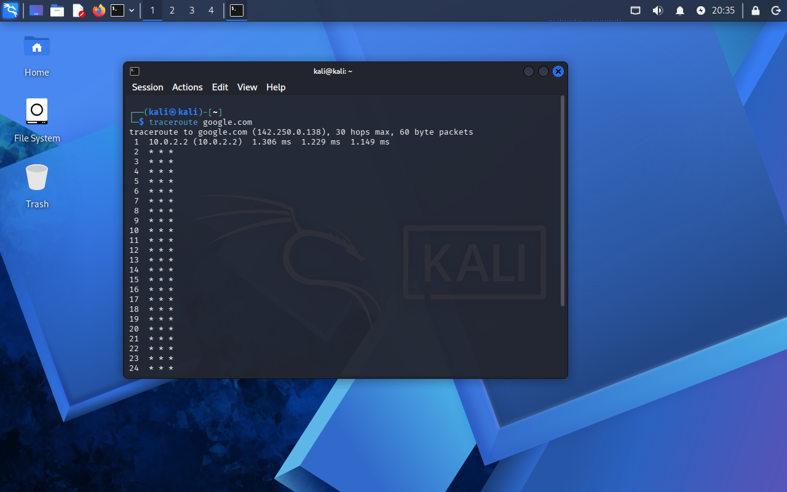

🎯 Objetivos del Laboratorio
Identificar y auditar de forma precisa los parámetros esenciales de configuración de red en un sistema operativo Linux para comprender el ciclo completo de comunicación local e Internet:
- ✓ Direccionamiento IP: Reconocer la IP local asignada al adaptador mediante interfaces virtuales en un entorno NAT privado.
- ✓ Puerta de enlace predeterminada (Gateway): Identificar el salto inicial requerido para comunicarse fuera del segmento local.
- ✓ Servidores DNS: Verificar los servidores resolutores de nombres configurados en el archivo del sistema.
- ✓ Diagnóstico de conectividad: Evaluar la respuesta de red hacia hosts externos usando el protocolo ICMP.
- ✓ Enrutamiento y saltos: Analizar la ruta que toman los paquetes capa a capa hasta llegar al destino final en Internet.
💻 Procedimiento & Comandos Ejecutados
Cada fase del laboratorio se documentó ejecutando utilidades estándar de administración y diagnóstico de redes en la consola de Linux:
ip a
ip route
cat /etc/resolv.conf
ping -c 4 google.com
traceroute google.com
📸 Evidencias Técnicas del Laboratorio
Haz clic en cualquier captura para ampliarla en alta resolución y examinar en detalle los datos obtenidos de la terminal:

🔍 Ver captura completa
1. Dirección IP (`ip a`)
Identificación de la interfaz y la dirección IP privada asignada dentro del entorno NAT virtual.

🔍 Ver captura completa
2. Gateway (`ip route`)
Verificación de la ruta por defecto (`default via`) utilizada como puerta de salida hacia el router virtual.
3. Servidores DNS (`resolv.conf`)
Inspección de las directivas `nameserver` para la resolución de nombres de dominio.

🔍 Ver captura completa
4. Conectividad ICMP (`ping`)
Transmisión y recepción de paquetes ICMP Echo Request/Reply hacia google.com sin pérdida.

🔍 Ver captura completa
5. Trazado de Ruta (`traceroute`)
Observación de los saltos intermedios y tiempos de latencia hasta alcanzar la infraestructura de Google.
🧠 Aprendizajes Clave & Aplicabilidad en Seguridad
Este laboratorio sienta las bases técnicas fundamentales para cualquier rol de defensa o análisis en ciberseguridad:
- ✓ Comprensión de NAT y direccionamiento RFC 1918: Esencial para rastrear artefactos y diferenciar direcciones privadas de IP públicas en incidentes de red.
- ✓ Diagnóstico rápido de conectividad: Saber identificar si una caída o anomalía proviene de resolución DNS, falla de enrutamiento o bloqueo ICMP.
- ✓ Fundamento para Analistas SOC: Entender la topología de red local antes de analizar alertas de tráfico malicioso, escaneos o intentos de exfiltración.